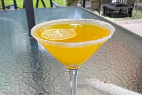

Lemon Drop Martini

Description
Very elegant, and so easy to make - you will love this lemon and lime drink.
Ingredients
- white sugar
- 1 long strip of lemon zest
- (1.5 fluid ounce) jigger citron
- ½ ounce lime juice
- 1 ounce sweet and sour mix
- 1 cup crushed ice
Steps
- Moisten the edges of a martini glass with a little lime juice, and then dip moistened edges into sugar. Place lemon zest strip in glass.
- Combine lime citron, lime juice, sweet and sour mix, and ice in a shaker. Shake vigorously, and strain into a martini glass.
Home